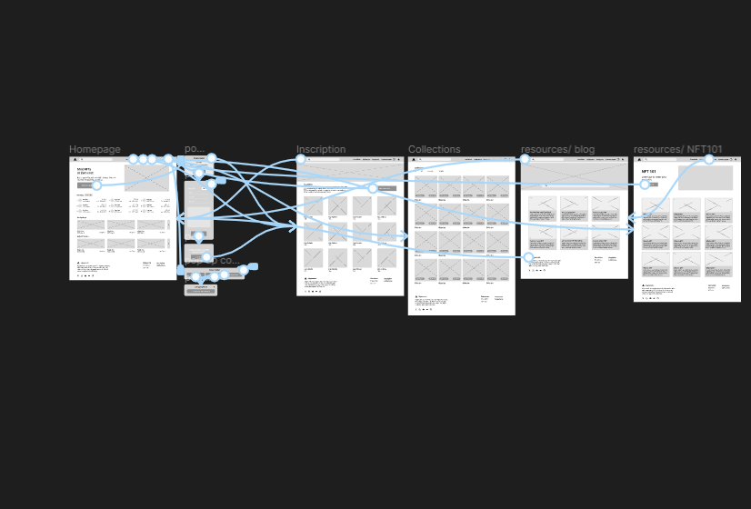

Design Highlights
Design challenge and responsibilities overview
About
Algoassets is a marketplace for Algorand assets, most especially NFTs. It allows its users to buy, sell, mint, and store their art and craft work as assets on Algorand assets. It is built under the Algorand blockchain.
Problem
Inability for creator and artistst to earn money from their art and other creations through digital means. The need to make passive income from their art and craft.
Goals
Create a digital platform that will allow artists and creators to earn income from their art.
Timeline
Four months
Responsibilities
Conducting interviews
paper and digital wireframing
low and high-fidelity prototyping
conducting usability studies
iterating on designs
Role
UI UX Designer
User Experience Researcher
Tools
Figma
Power Point
Adobe Creative Suite
Slack
Google form
The Process
1
Research
User research
User Personas
Problem Statements
User Journey Maps
2
Ideation
Sitemap
Paper wireframes
Digital wireframes
Low-Fidelity Prototype
3
Develop/Design
Mockups
High Fidelity prototype
Accessibilty
4
Reflection
Takeaways
Next steps
Research
Competitor Analysis
I researched the users to understand the pain points of the artists and which of these pain points they wanted solved. At the end of the research, I was able to know that artists wanted a platform that could help them make passive. To better understand the users and how their problems could be solved, I did a competitor analysis, which exposed me to other platforms offering similar services. Some of the major weaknesses of these platforms are bad navigation and high gas fees.
User research
Pain points
Passive income
Earning extra income from arts and crafts created by artists and creators
High gas fee
Platforms offering similar services have high gas fees, making the creation of NFTs expensive
Website navigation
Online websites don’t provide an engaging browsing experience
Persona
Peju
Problem Statements
Peju is a young entrepreneur in the art industry who needs a platform where she can sell her artwork to earn extra income and grow her business.

User journey map
I created a user journey map of Mahalia’s experience using the site to help identify possible pain points and improvement opportunities.

Ideation
Sitemap
Difficulty with website navigation was one of the pain points for users, so I used that knowledge to create a sitemap. My goal here was to make strategic information architecture decisions that would improve overall website navigation. The structure I chose was designed to make things simple and easy.

Ideation
Paper Wireframes
Next, I sketched out paper wireframes for each screen in my app, keeping the user’s pain points about navigating to creating an NFT and browsing other areas of the site.

Ideation
Digital wireframe screen size variation(s)
Ideation
Low-fidelity prototype
Next, I sketched out paper wireframes for each screen in my app, keeping the user’s pain points about navigating to creating an NFT and browsing other areas of the site.
Usability Study Findings
Minting Button: Users find it difficult to navigate to the creator’s page where digital art/NFT can be created.
Minting Process: Some users who aren’t familiar with this platform do not know how to create or mint new artwork/NFT on the platform
Design
Mockups
To make it easy for users to carry out the primary goal on the website, a button for creating NFTs is added to the home screen of the page. To make it easy for users who do not know how to create NFTs/digital artworks, a new page is added to the website with the information on how to create NFT, it’s titled NFT101
Design
Mockups: Screen size variations
I included considerations for additional screen sizes in my mockups based on my earlier wireframes. Because users use the web app from a variety of devices, I felt it was important to optimize the browsing experience for a range of device sizes, such as mobile and desktop so users have the smoothest experience possible.
Design
High-fidelity Prototype
My hi-fi prototype followed the same user flow as the lo-fi prototype and included the design changes made after the usability study, as well as several changes obtained as an insight from the usability study.
Design
Accessibility considerations
Dark Mode
For accessibility, I implement dark mode in the web app design to reduce eye strain when being used in a dark environment.
Hierarchy
For accessibility, I implement text hierarchy to make it easy to identify the most important elements on the page and to also make it easy for assistive technology
Landmarks
Another accessibility feature was to use landmarks to help users navigate the site, including users who rely on assistive technologies
Reflection
Takeaways
Impact
Our target users shared that the design was intuitive to navigate through, more engaging with the NFTs images, and easy to use
What I learned
The most important takeaway for me is to always focus on the real needs of the user when coming up with design ideas and solutions and that even a small design change can have a huge impact on the user experience.